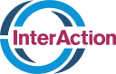
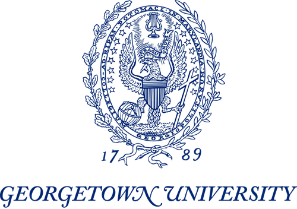
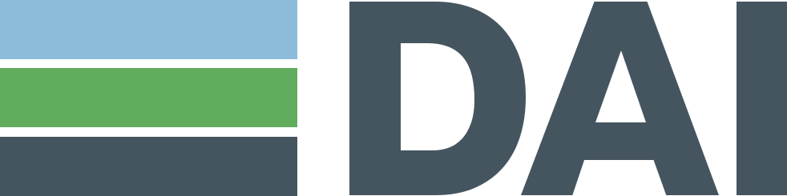

Aceleramos las voces democráticas en la era de la IA
Ayudamos a las organizaciones cívicas a ser más capaces, influyentes y resilientes—para que la democracia también lo sea.
Por qué ahora
La democracia necesita nuevas formas de competir, conectar y generar resultados
Las tradiciones democráticas siguen siendo importantes. Pero las instituciones y prácticas construidas a su alrededor no han seguido el ritmo de un mundo transformado por la tecnología, la fragmentación informativa, el creciente poder autoritario y la pérdida de confianza pública.
Las organizaciones cívicas hacen real el poder democrático
Ayudan a las personas a organizarse, expresarse, resolver problemas, construir comunidades y exigir cuentas a las instituciones. Sin embargo, se les pide hacer más con menos recursos mientras disminuye el financiamiento, se restringe la colaboración transfronteriza y el entorno informativo se vuelve más rápido y sofisticado.
Apoyar a las organizaciones cívicas es central para el trabajo del Studio—pero el propósito más amplio es ayudar a que la democracia evolucione: preservar lo esencial y desarrollar enfoques a la altura del presente y del futuro.
Necesitamos una nueva forma de hacer democracia—capaz de proteger el espacio democrático, reducir las barreras a la participación y ayudar a que voces creíbles lleguen a las personas y las movilicen.
Ideas y encuentros
Generamos y promovemos nuevos enfoques para la democracia en la era de la IA
New Democracy Studio crea espacio para perspectivas críticas que pueden cambiar cómo se entienden los problemas democráticos—y qué hacemos al respecto.

Desarrollamos y publicamos análisis en la intersección de la democracia, la tecnología y el entorno informativo; reunimos a personas alrededor de las preguntas que esos análisis plantean y buscamos ideas que puedan ponerse a prueba en la práctica.
Expertos, académicos, funcionarios públicos, líderes del sector privado y actores cívicos de todo el mundo nos ayudan a cuestionar supuestos, comparar experiencias entre sectores y países, y descubrir posibilidades difíciles de encontrar en soledad.
Los encuentros nos permiten generar y poner a prueba ideas. Algunas pueden convertirse en programas, alianzas o experimentos aplicados en contexto.
Programas
De las ideas a un mayor impacto democrático
Nuestros programas desarrollan capacidades prácticas, relaciones más sólidas y enfoques que pueden probarse en contexto, mejorarse y ampliarse.
Aprende a usar la IA para la democracia
Formación práctica, cohortes y apoyo organizacional para profesionales cívicos que quieren desarrollar capacidades con IA.
Explora Democracy+AI →Democracia, Confianza y Seguridad Nacional
Fortalecemos los vínculos entre profesionales, perspectivas e ideas de los campos de la democracia y la seguridad nacional.
Conoce más →Contrarrestar la Censura y la Propaganda Autoritarias
Una serie focalizada de talleres y conversaciones para evaluar enfoques anteriores y preparar opciones para el futuro.
Ver el programa →Nosotros
New Democracy Studio genera ideas informadas por la práctica—y fortalece la práctica con ideas
Por qué un studio
Práctico. Reflexivo. Centrado en las personas.
El Studio reúne ideas, debate y experimentación en un mismo proceso. Partimos del trabajo y las comunidades reales, ponemos a prueba nuestros supuestos con una red global de aliados y desarrollamos enfoques que puedan mejorarse y compartirse.
Definir el desafío y abrir posibilidades.
Cuestionarlas, conectarlas y ponerlas a prueba.
Poner las ideas en práctica—luego mejorarlas y ampliarlas.
Adam Fivenson
Chief Democracy Officer
Después de dos décadas trabajando en tecnología, asuntos globales y apoyo a la democracia, he aprendido que la democracia depende de que las personas sepan que tienen el poder de construir su propio futuro. Las organizaciones cívicas hacen real ese poder: ayudan a las personas a organizarse, expresarse, resolver problemas y exigir cuentas.
Experiencia en





Contacto
¿Qué quieres cambiar?
Cuéntanos sobre un desafío, una idea emergente o un equipo listo para desarrollar nuevas capacidades.